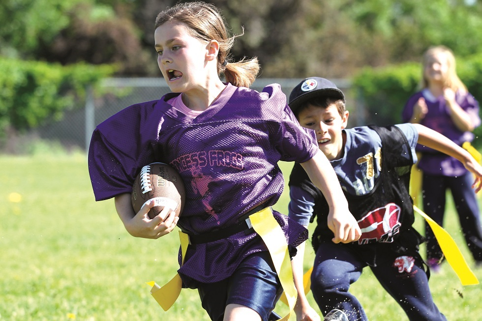

There is an overall shortage of quality, outdoor, well-lit sporting facilities in Saskatoon. Currently, Griffiths Stadium in PotashCorp Park at the University of Saskatchewan is the city's only regulation artificial turf football field. While they try to accommodate the requests of local teams, scheduling is a challenge and open times are not ideal. As the city grows, an increasing number of players, coaches, officials, and fans are putting strain on the ability of our current facilities to satisfy rising demands. Other venues are needed to keep up with Saskatoon's thriving outdoor sport programs.
Saskatoon needs safe, reliable, and appropriate sporting facilities that can accommodate the needs of a variety of outdoor sport programs. Football participation is increasing yearly; accordingly, enrollment in other outdoor sports such as rugby, soccer, lacrosse, field hockey, ultimate frisbee, softball, track and field, and cross-country skiing is also on the rise. The Bowl has the potential to meet the demands of not only the football community, but also those of countless other local sport groups. The Bowl would become a venue that supports games, practices, and tournaments while attracting regional, national, and international events that would be of immeasurable value to our community.
Female football participation is projected to increase over the next five years - the Bowl upgrades are critical for the development of girls' and women's football.
Michelle Duchene - General Manager, The Saskatoon Valkyries Three Time WWCFL Champions
Our league plays fifty games at the Bowl per season, yet the current field prevents us from delivering the calibre of high school football our athletes, players, and coaches deserve.
Brad Smith - Educational Consultant, Saskatoon Secondary Schools Athletic Directorate (SSSAD)
{kind=link}
{kind=link}